Seerosen (Pixabay/Unsplash) AUSWAHL nötig 5 Bilder
Kandidaten für 3D-Textur / Alpha
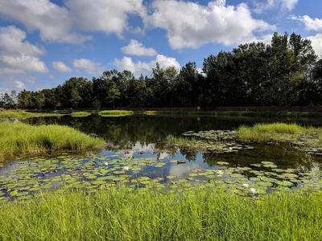
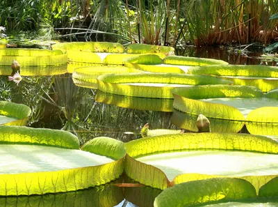
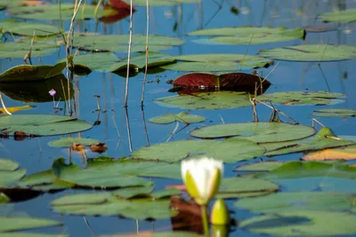
WaveSpeed 4K Hero PFLICHT-Kandidat 2 Bilder
Bereits generierter Hero-Hintergrund
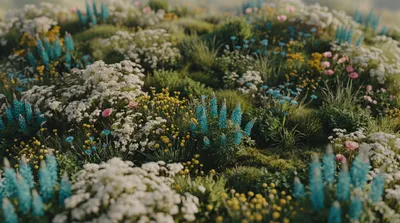
WaveSpeed 4K Glaskugel PFLICHT-Kandidat 2 Bilder
Referenz-Glaskugel für 3D-Material
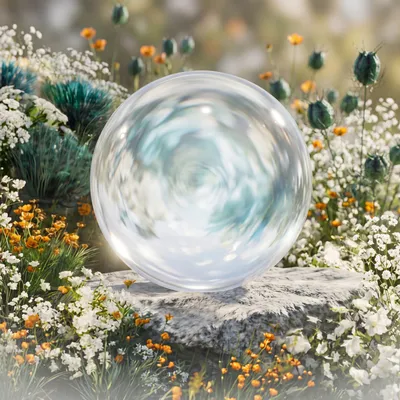
WaveSpeed 4K Sektionen Vorhanden 6 Bilder
Section-Backgrounds (Claude/Perplexity)
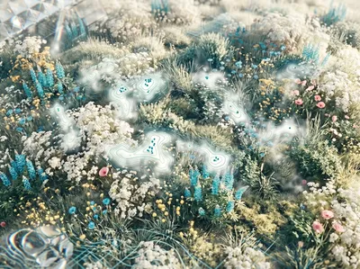
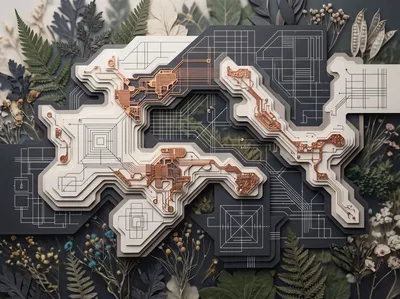
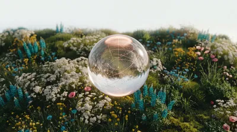
WaveSpeed 4K Zusatz Vorhanden 4 Bilder
CTA / Feature-Spotlight
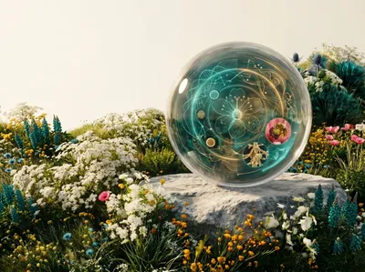
Studio-Varianten Glaskugel Referenz 8 Bilder
Beleuchtungsstudien für Glas
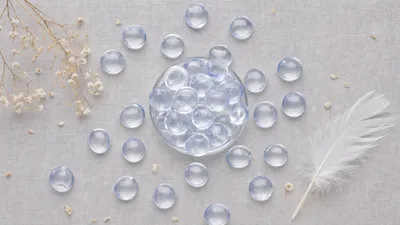
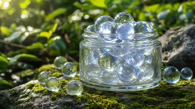
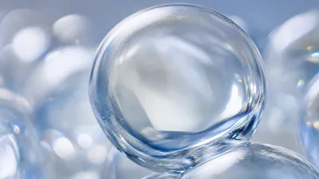
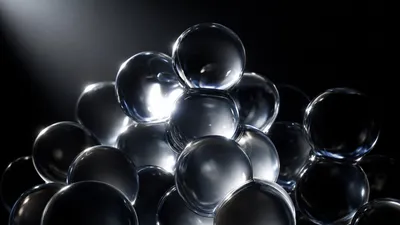
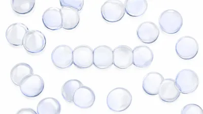
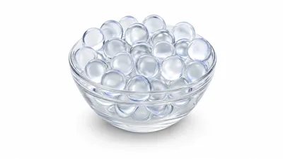
Glasobjekt-Referenz Referenz 2 Bilder
Materialstudie Glas
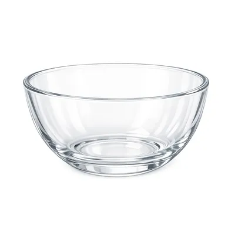
Perlen/Beads Referenz 4 Bilder
Materialstudie klein/rund
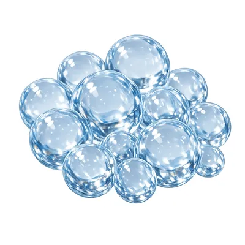
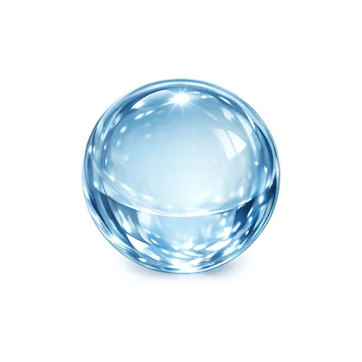
Pfingstrosen-Kompositionen Referenz 4 Bilder
Referenz-Look; nicht direkt nutzbar
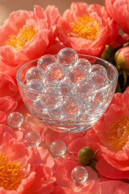
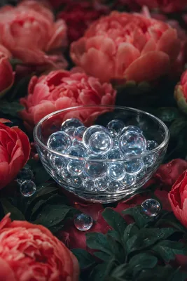
Feder Referenz 1 Bilder
Referenz Element
Unsplash Referenzen Referenz 3 Bilder
Ästhetik-Referenz
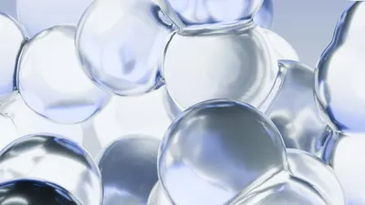
Sonstiges 1 Bilder

Weltkugel-Frames Vorhanden (Frames) 9 Bilder
Bereits verwendet in globe-hero
kein Thumbnail
kein Thumbnail
kein Thumbnail
kein Thumbnail
kein Thumbnail
kein Thumbnail
kein Thumbnail
kein Thumbnail
kein Thumbnail
Screenshots Referenz 4 Bilder
Referenz aus Anhang
kein Thumbnail
kein Thumbnail
kein Thumbnail
kein Thumbnail